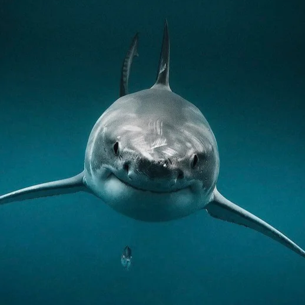

| Animales | Descripción | Imagen |
|---|---|---|
| Nutria | Nombre común: Nutria Nombre científico: Lutra lutra (nutria europea; existen otras especies como Lontra canadensis) Familia: Mustelidae Dieta: Carnívora (peces, crustáceos, anfibios) Hábitat: Ríos, lagos y humedales de casi todo el mundo Extra: Son muy ágiles nadadoras y usan sus patas y cola para impulsarse. Tienen pelaje denso que las mantiene calientes bajo el agua. | |
| León | El león es un gran felino conocido como el rey de la selva. | |
| Elefante | El elefante es el animal terrestre más grande del mundo. | |
| Águila | El águila es un ave rapaz con excelente visión. | |
| Tiburón | Nombre común: Tiburón Nombre científico: Carcharodon carcharias (tiburón blanco; existen más de 500 especies) Familia: Varia según especie, por ejemplo Lamnidae (tiburón blanco) Dieta: Carnívora (peces, mamíferos marinos, moluscos, plancton según la especie) Extra: Tienen cartílago en lugar de huesos, sentidos muy desarrollados y son depredadores clave en los ecosistemas marinos. |  |